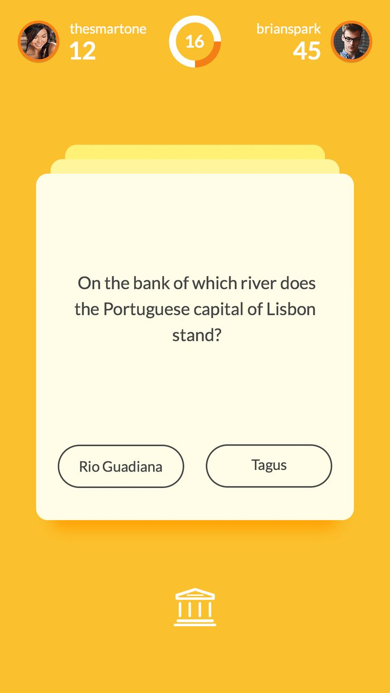
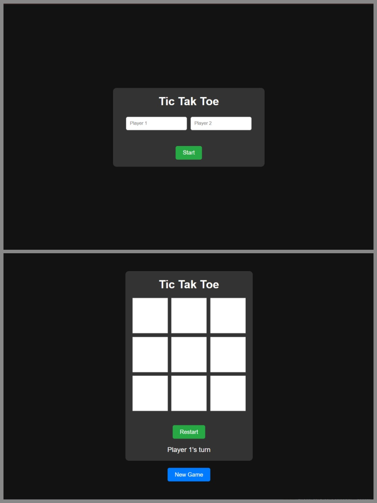

My Works
Thanks for showing interest here is a detailed list of all my completed and ongoing projects. I had also attached the links for github repostories, you can check them as well



Voice to Text Convertor
This project demonstrates the power of the Web Speech API to transcribe speech into text in real time. It offers a clean, responsive design and is easy to integrate into any project. Perfect for note-taking, brainstorming, or exploring voice recognition, it showcases the seamless interaction between modern web technologies and user experience.